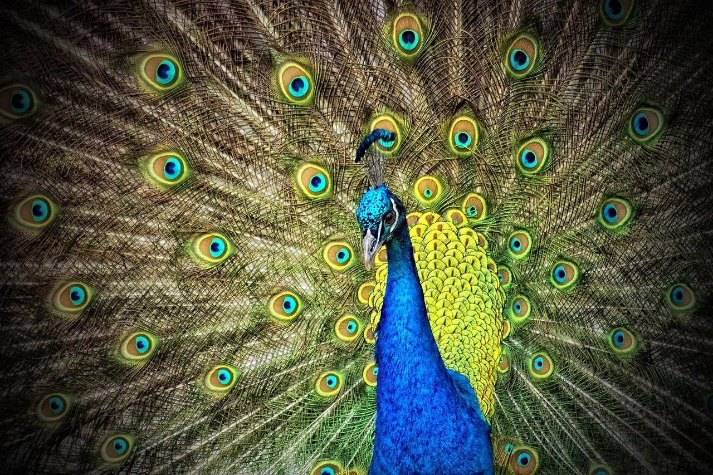

Índice
Agaporni
Características Físicas
- Tamaño: Son aves pequeñas, con un tamaño promedio de entre 13 y 17 cm de largo.
- Plumaje: El plumaje de estos lovebirds es muy colorido y vibrante. En la imagen, se destacan por su cara y parte superior del cuerpo de un color naranja intenso, que se va suavizando hacia un tono más claro en el pecho, mientras que el resto de su cuerpo es de un verde brillante. Este contraste de colores les da un aspecto llamativo y adorable.
- Ojos: Tienen ojos oscuros y redondeados, lo que les da una expresión tierna y cálida.
Comportamiento y Personalidad
- Sociales: Son conocidos por su naturaleza extremadamente social y afectuosa. Viven en pareja, y en la naturaleza, suelen formar vínculos muy fuertes con su compañero/a.
- Cariñosos: Se les llama "pájaros del amor" debido a la conexión íntima y el comportamiento tierno que muestran hacia sus parejas. Además, son juguetones y les gusta interactuar tanto entre ellos como con los humanos.
- Ruidosos: Aunque son pequeños, pueden ser bastante ruidosos, especialmente cuando están felices o desean llamar la atención.
Hábitat Natural
- Distribución: Estos pájaros provienen principalmente de África, especialmente de las zonas del sur y del este del continente. Son aves que habitan en regiones boscosas y savanas.
- Vida en libertad: En su hábitat natural, se agrupan en bandadas y buscan áreas con árboles y arbustos donde puedan anidar y alimentarse.
Cuidado en Cautiverio
- Alimentación: Se alimentan de semillas, frutas y vegetales, y deben tener una dieta balanceada para mantenerse saludables.
- Alojamiento: En cautiverio, necesitan una jaula espaciosa donde puedan volar libremente y suficientes juguetes para mantenerse activos. Además, requieren la compañía de otro lovebird para evitar la soledad y la tristeza.
- Expectativa de vida: En promedio, los lovebirds pueden vivir entre 10 y 15 años si se les cuida adecuadamente.
Reproducción
- Vínculos fuertes: Son conocidos por formar parejas monógamas, es decir, una vez que encuentran su pareja, suelen permanecer juntos de por vida.
- Anidación: Las hembras ponen entre 3 y 6 huevos, y ambos padres se encargan de incubarlos y cuidar a los polluelos después de que nacen.

Volver al índice
Pavo real
Características físicas
- Tamaño: Son aves grandes. Los machos pueden medir entre 2 y 2.3 metros de largo, contando la cola, mientras que las hembras son más pequeñas, con un promedio de 90 a 110 cm.
- Plumaje: El pavo real es famoso por su plumaje espectacular. Los machos poseen una cola larga y abundante con plumas iridiscentes en tonos azules, verdes y dorados, adornadas con los característicos “ojos” o ocelos. El cuerpo suele ser de un azul intenso y brillante, especialmente en el cuello y el pecho. Las hembras tienen colores más discretos, principalmente marrones y verdes, lo que les ayuda a camuflarse.
- Ojos: Tienen ojos pequeños y oscuros, con una mirada atenta y alerta.
Comportamiento y personalidad
- Sociales: No forman parejas tan estrechas como los agapornis, pero pueden vivir en grupos pequeños, especialmente fuera de la época de reproducción.
- Exhibicionistas: Los machos son conocidos por desplegar su cola en forma de abanico para impresionar a las hembras, acompañado de movimientos y sonidos vibrantes.
- territoriales: Durante la época de apareamiento, los machos pueden volverse territoriales y dominantes.
Hábitat Natural
- Distribución: Son originarios del sur de Asia, especialmente de la India y Sri Lanka, aunque hoy en día se encuentran en zoológicos y parques de todo el mundo.
- Vida en libertad: Habitan en bosques abiertos, selvas y áreas cercanas a ríos. Pasan gran parte del tiempo en el suelo, pero duermen en árboles para protegerse de depredadores.
Cuidado en Cautiverio
- Alimentación: Se alimentan de semillas, granos, frutas, insectos y pequeños reptiles. En cautiverio necesitan una dieta variada y equilibrada.
- Alojamiento: Requieren espacios muy amplios, preferiblemente al aire libre, donde puedan caminar y desplegar su cola sin dificultad.
- Expectativa de vida: Pueden vivir entre 15 y 25 años con buenos cuidados.
Reproducción
- Cortejo llamativo: El macho atrae a varias hembras mostrando su cola desplegada y realizando danzas.
- Anidación:La hembra pone entre 3 y 5 huevos en nidos simples hechos en el suelo. Ella se encarga principalmente de la incubación y el cuidado de los polluelos.

Volver al índice